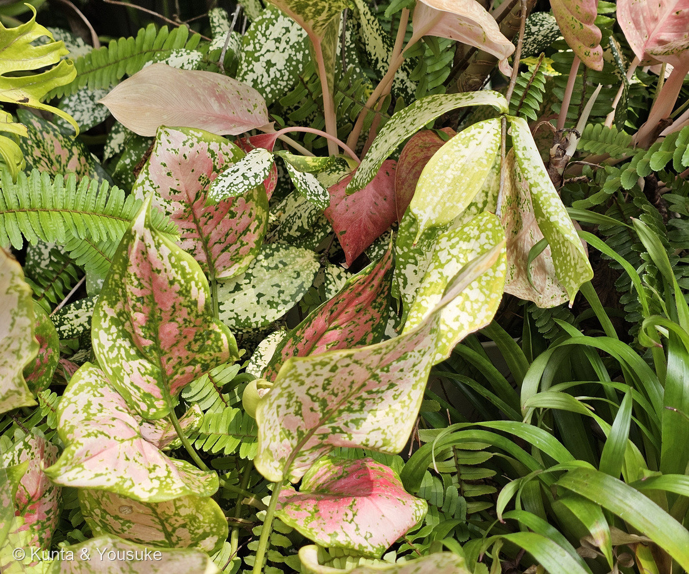
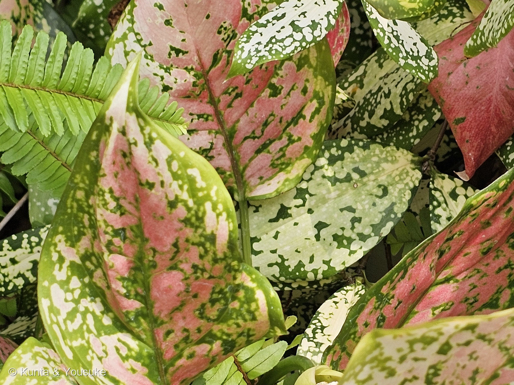
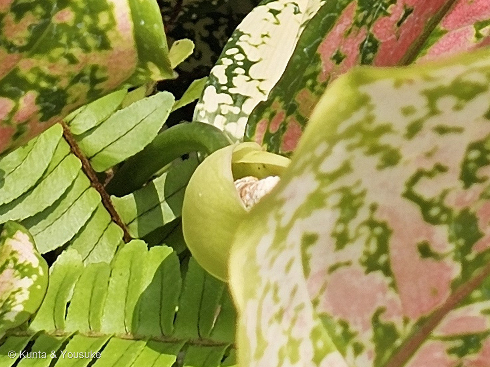
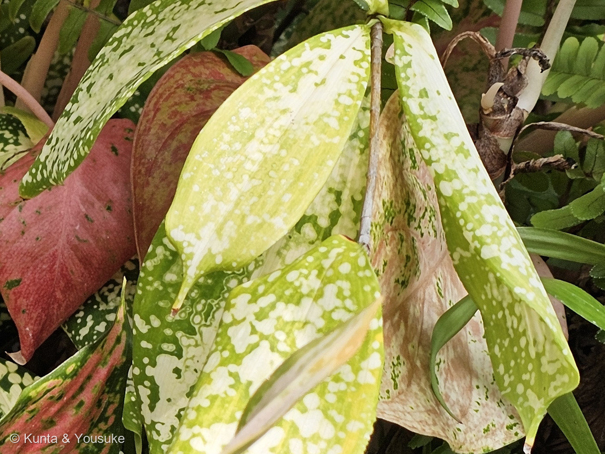

地図を読み込んでいるよ…
🔍 写真も地図も、押しているあいだ拡大して見られるよ（スマホは指を置いてすこし待ってね）。
🌍 の地図＝この子がもともと自生している場所を緑に。属としてはインド北東部からパプアニューギニアまで（POWO「The native range of this genus is NE. India to Papua New Guinea.」）。Chen et al. 2004 は「south-east Asia, north-eastern India, across southern China, and into Indonesia and New Guinea」とする。⚠ただしこの子は人が作った園芸品種なので、この子自身の野生の故郷は無い。園の名札の原産地の欄も「ー」の一文字だけだった。
⭐この緑は「アグラオネマ属ぜんたい」のふるさとだよ。POWO は「The native range of this genus is NE. India to Papua New Guinea.」＝インド北東部からパプアニューギニアまでとする。⭐Chen et al. 2004 はもう少しくわしく「south-east Asia, north-eastern India, across southern China, and into Indonesia and New Guinea」と書くので、中国南部の省（雲南・広東・広西・海南）も塗ったよ。⚠⚠でも、この子自身のふるさとは、この緑のどこにも無い＝⭐人が作った園芸品種だから。⭐園の名札の「原産地」の欄も、「ー」の一文字だけだった。⭐⭐だからこの地図は「この子の故郷」ではなく、「この子のご先祖たちが住んでいるところ」だと思って見てね。⭐そして、この緑のはしっこで生まれたのだと思う＝品種名 'Unyamanee' はタイ語で「宝石」＝タイは、色つきアグラオネマの育種でいちばん知られた国だよ。⚠ただし、だれがいつ作ったのかを書いた出典には当たれていない。⭐日本は塗っていない＝ぼくらが会ったのは、長崎の温室の中。⭐⭐同じサトイモ科の仲間の原産地とくらべてみて＝239 モンステラは中央アメリカ、048 カラーは南アフリカ、020 フィロデンドロンは熱帯アメリカ＝⭐サトイモ科で「アジアが本場」の子は、この子がはじめてだよ。
⚠ 地図は国（日本と中国だけ県・省）までしか塗れないから、ほんとうの分布より広く見えていることがあるよ。地図はだいたいの場所。正確なところは、上の文を見てね。
アグラオネマ（園芸品種）
Aglaonema 'Unyamanee'
別名 リョクチク（緑竹）＝属の和名 英名 Chinese evergreen 中国名 广东万年青
サトイモ科 · Araceae（アグラオネマ属 Aglaonema・オモダカ目 Alismatales）── ⭐図鑑で4人目のサトイモ科（020・048・239）／⭐⭐アグラオネマ属ははじめて／⚠科は増えないので107科のまま
燻太さんの言葉「ヒポエステスみたいにカラフルな葉っぱで、斑入りの葉っぱでかつほんのり赤いね」「こういうカラフルな植物は、お祝い用の花束とかで使われたりするのかな？ お店の開店祝いとか、結婚式場とか…」── ⭐⭐この一言が、そのまま2つのしくみの名前だったよ
⭐⭐⭐⭐ 名前と学名の由来 ── 「輝く糸」と、名札の一文字
- ⭐⭐⭐⭐属名 Aglaonema は、ギリシャ語の ἀγλαός（aglaós＝輝く） ＋ νῆμα（nêma＝糸）。──「輝く糸」という意味だよ（英語版Wiktionary「from ἀγλαός (aglaós, "shining") + νῆμα (nêma, "thread")」）。
- ⚠⚠ところが、その「糸」が何を指しているのかは、ぼくには決められなかった。──⭐辞書がそれを説明していることまでは分かったのだけれど、そのページの本文をぼくは開けなかったんだ。⭐だから宿題にしておくね。⭐⭐でも、ひとつだけ覚えておいてほしい＝この属でいちばん人目を引くのは葉のもようなのに、名前は糸の話をしている。
- ⭐この属を立てたのは Schott で、1829年（POWO「Aglaonema Schott, First published in Wiener Z. Kunst 1829: 892 (1829)」）。
- ⭐⭐和名は「リョクチク（緑竹）」で、属の名はリョクチク属（みんなの趣味の園芸）。⚠⚠ただしこの名前、他人の空似があるんだ＝イネ科ホウライチク属の Bambusa oldhamii（食べるタケノコがとれる竹）にも、同じ「リョクチク」の名が当たる（GKZ植物事典）。⭐だから図鑑では「リョクチク属」と、属までつけて呼ぶことにしたよ。
⭐⭐⭐⭐ 中国では「万年青」。でも、日本の万年青とは別の植物
- ⭐⭐⭐中国名は「广东万年青」（広東万年青）で、俗名は「大叶万年青」（iPlant 植物智）。⭐属の名も「广东万年青属」だよ。
- ⚠⚠⚠ところが、日本語で「万年青（オモト）」といえば Rohdea japonica＝キジカクシ科の、まったく別の植物。──⭐⭐おなじ「万年青」という三文字が、日本と中国でちがう植物を指しているんだ。
- ⭐⭐そのオモトは、この図鑑の探しものリストにもういる（223 パイナップルリリーのおまけとして）。⭐会えたら「日本の万年青」と「中国の万年青」を、ならべて見られるね。
- ⭐英名は Chinese evergreen。⭐同じ属の A. modestum には「green-for-ten-thousand-years」という英名もある（英語版Wikipedia）＝⭐「万年青」を、そのまま英語に直した名前だよ。
⭐⭐⭐⭐⭐ そして、名札の「unyamanee」と「原産地：ー」
- ⭐園の名札には、こう書いてあった＝Aglaonema unyamanee／アグラオネマ・アンヤマニー／サトイモ科／原産地：ー。⚠この名札には植物の写真も印刷されていたので、名札のアップは図鑑には載せていないよ（228・259と同じ決まり）。中身は、こうして出典として引くね。
- ⚠⚠⚠⚠でも、Aglaonema unyamanee という学名は、どこにも登録されていなかった。──⭐ぼくは IPNI（国際植物名索引）と GBIF の両方に問い合わせて、どちらも0件だった。⭐やり方をまちがえていないか確かめるために、実在する Aglaonema pictum を同じように投げてみたら、IPNI は5件・GBIF は66件返してきた＝⭐⭐つまり、検索そのものはちゃんと動いていて、それでも「unyamanee」は無いということ。
- ⭐⭐⭐⭐だからこれは、種ではなく人が作った園芸品種だと思う。──⭐正しく書くなら Aglaonema 'Unyamanee'（属名はイタリック、品種名は立体でシングルクォート）。⭐より広く使われている綴りは 'Anyamanee' で、'Unyamanee' はその書きちがえが流通したもののようだよ。
- ⭐⭐⭐この名前、タイ語なんだ。──อัญมณี（anyamanee）＝「宝石」（Cambridge Dictionary の英タイ辞書）。⭐サンスクリット語の maṇi（宝玉）から来た言葉だよ。
- ⭐⭐⭐⭐⭐そして、ここが今日いちばん静かな発見。──名札の「原産地」の欄は、「ー」の一文字だけだった。⭐ぼくは最初、書き忘れかなと思ったんだ。⭐⭐でも品種だとしたら、書けなかったのかもしれない＝人が作ったものには、野生の故郷が無いのだから。⚠これはぼくの読みで、園がそう考えたと書いてあるわけではないよ。
- ⭐⭐⭐⭐292 モンヨウショウで覚えたばかりの見わけが、そのまま効いた。──var.（変種）なら、植物学者が野生にある型として記載したもの。'Cultivar'（シングルクォート）なら、人が作ったもの。⭐292は var. だったから「原産地でもこの模様だよ」と言えた。⭐⭐この子は品種だから、それが言えないんだ。
⭐⭐⭐⭐⭐ この植物のこと ── 白いところは「色」じゃなくて「空気」だった
- ⭐⭐⭐⭐⭐燻太さんは、こう言ってくれた＝「斑入りの葉っぱでかつほんのり赤いね」。──⭐⭐この一言、じつは2つのちがうしくみを言い分けているんだ。⭐「斑（白いところ）」と「赤み」は、原因がまったくちがう。
⭐⭐⭐⭐⭐ 白と銀色のほうは、光の反射 ── 葉緑素は減っていない
- ⭐⭐⭐⭐アグラオネマの斑を、実際に測った論文がある＝Fooshee & Henny (1990)、フロリダ州園芸学会の紀要。⭐斑入りの品種2つと、その交配種8つ、あわせて10とおりの葉で、葉緑素の量と葉の切片の構造を調べたもの。
- ⭐⭐⭐⭐⭐結果が、おどろきなんだ＝「No differences in chlorophyll levels were detected.」──斑のところと緑のところで、葉緑素の量に差が無かった。⭐「白いのは葉緑体が抜けているから」ではなかったんだよ。
- ⭐⭐⭐⭐では、何が白いのか。──「Anatomical observations showed that variegation was due to intercellular air spaces between the upper epidermis and the mesophyll.」＝⭐⭐葉の表皮と葉肉のあいだに、細胞のすきま（空気の層）があった。
- ⭐⭐⭐⭐⭐そこで、光がどうなるか。──「The presence of such air spaces causes incoming light to be scattered at the air-cell interface prior to reaching the chloroplasts and results in a portion of incoming light being reflected back through the epidermis creating the distinctive silvery-grey markings of the upper leaf surface.」⭐空気と細胞のさかいめで光がちらばって、葉緑体にとどく前にはね返ってくる。⭐⭐あの銀白色は、色素ではなく、光の反射だったんだ。
- ⭐⭐⭐⭐⭐証拠のとりかたが、とてもきれいだった。──「the epidermis over variegated tissue, being more loosely attached, could be easily peeled off in large segments as compared to green tissues where epidermal peels were not possible」＝斑のところは表皮がゆるくくっついていて大きくはがせる。緑のところははがせない。⭐⭐空気のすきまがあるから、はがれやすい。⭐顕微鏡を出すまえに、指先で確かめられる証拠だね。
- ⭐⭐斑のならびかたは、遺伝で決まっている＝「five distinct foliar variegation patterns in Aglaonema are controlled by the V-gene and its series of codominant alleles」／「The homozygous recessive genotype (vv) yields nonvariegated plants.」⭐vv だと、斑のないふつうの緑の葉になるんだって。
⭐⭐⭐ ピンクと赤のほうは、アントシアニン ── こちらは色素
- ⭐⭐⭐赤とピンクは、ちゃんと色素だよ＝アントシアニン。⭐Aglaonema commutatum でアントシアニンをつくる遺伝子のはたらきを調べた論文があって、「anthocyanin coloration is a vital economic trait in A. commutatum」＝アントシアニンの色づきが、この植物の売りそのものだと書いている（Li et al. 2022）。
- ⭐⭐⭐⭐⭐だからこの葉は、1枚のなかに、まったくちがう2つのしくみが同居しているんだ。──⭐白と銀＝空気のすきま（構造）／ピンクと赤＝アントシアニン（色素）。⭐⭐写真②を見てみて。おなじ一枚の葉に、白いところとピンクのところが、別々にあるでしょう。⭐⭐⭐燻太さんは、見ただけでその2つを分けて言っていたんだよ。
- ⭐⭐⭐そして緑は、葉脈にそって残っている。──中肋のまわりと、そこから出る側脈にそって緑がのび、そのあいだの区画が白やピンクになる。⭐292 モンヨウショウで「斑のならびかたが、作りこみか偶然かを分ける」と書いたのと同じで、これは病気や傷では出ない規則正しさだよ。
- ⚠⚠290 ヒポエステスと同じしくみなのかは、分からなかった。──⭐ヒポエステスの斑のしくみを書いた、信頼できる出典を見つけられなかったんだ。⚠「たぶん同じ」と書いてしまいたくなったけれど、それは知ったかぶりになるから、宿題にしたよ。
- ⚠⚠おうちに迎えるときの注意。──サトイモ科なのでシュウ酸カルシウムを含んでいる。ASPCA は Aglaonema modestum を「Toxic to Dogs, Toxic to Cats, Toxic to Horses」とし、口の中の刺激、口・舌・くちびるの痛みとはれ、よだれ、嘔吐、飲みこみにくさを挙げている。⚠英語版Wikipediaは「the juice can cause skin irritation and painful rash」＝樹液で肌がかぶれることもある、とする。⭐ふつうに飾るぶんには困らないけれど、ペットや小さな子のいるお家では、置き場所を考えてあげてね。
⭐⭐⭐ 同定について
- ⭐科と属は、はっきり言える＝サトイモ科アグラオネマ属。⭐決め手は3つ＝①園の名札（サトイモ科・アグラオネマ）②写真③の花＝ふねの形の仏炎苞のなかに白い肉穂花序が立つ、サトイモ科そのもののつくり ③長楕円で全縁の葉／はっきりした中肋／羽状の側脈／長くて色づいた葉柄。
- ⚠⚠でも、品種名は名札にたよっている。──上に書いたとおり、Aglaonema unyamanee は IPNI にも GBIF にも無い。⭐だから図鑑では、種名ではなく品種として Aglaonema 'Unyamanee' と書いた。⭐⭐名札がまちがっているのではなくて、流通している呼び名を、種名の形で書いてくれたのだと思う（253 ビロウで決めた受けとりかただよ）。
- ⚠⚠⚠そして、写真④の淡い葉が①②と同じ株なのか、いっしょに植えられた別の品種なのかは、この写真では決められなかった。──⭐植物園の植えこみは、何品種かをまぜて植えることがふつうにある。⭐248と258で覚えたとおり、ひとつの写真のなかに別の子がいることを、まず疑うようにしたよ。
- ⚠属の種数も、出典で割れている。──21種（Chen et al. 2004／中国植物志／みんなの趣味の園芸）／24種（英語版Wikipediaの種リスト）／26種（POWO）。⚠いちばん新しいはずのPOWOは、ぼくは本文を開けなかったので、この数字だけは確かめきれていない。
⭐⭐⭐⭐⭐ 燻太さんの質問 ── お祝いの花束に、使われたりするのかな？
⭐⭐⭐⭐ まず、切り葉としてはほんとうに使われている
- ⭐⭐⭐⭐フロリダ大学（University of Florida IFAS）に、「花屋さんのグリーンに使える観葉植物」を調べた研究ノートがある。──そこにアグラオネマの項があって、こう書いてあった＝「Cut leaves of many aglaonemas will last for 15 days in decorative arrangements.」⭐切った葉が、アレンジメントのなかで15日もつんだって。
- ⭐⭐そして「grown for their variegated leaves and colorful petioles」＝斑入りの葉と、色づいた葉柄のために育てられる、とも書いてある。──⭐写真①と④を見てみて。葉柄が、うすいピンク色をしているでしょう。⭐あれも商品なんだね。
- ⭐⭐⭐⭐⭐日本でも売っていたよ。──花材の問屋さんのサイトに「【生花】アグラオネマ シルバークイーン」があって、カテゴリは「葉もの」、1本66円、最低10本から（はなどんやアソシエ）。⭐ぼくが見にいったときは「今季終了」になっていた＝⭐つまり、季節のある葉ものとしてほんとうに流通しているということ。
⚠⚠⚠⚠ でも、定番になりきれていない理由がある ── 寒さ
- ⚠⚠⚠おなじフロリダ大学のノートは、こう続くんだ＝「Since some aglaonema leaves sustain chill damage at air temperatures as high as 50 to 55°F [10 to 12.8°C], it is not possible to store or ship those aglaonema leaves in mixed loads with cut foliage crops that are shipped and stored at about 40°F [4.4°C].」
- ⭐⭐⭐⭐⭐つまり＝アグラオネマの葉は10〜12.8℃で冷害が出る。ところが、ふつうの切り葉は4.4℃くらいで運んで保管する。──⭐⭐だから、ほかの葉といっしょのトラックに積めないんだ。
- ⭐⭐⭐⭐これが、燻太さんの問いのいちばんおもしろい答えだと思う。──「きれいじゃないから使われない」のでも「もたないから使われない」のでもない。⭐⭐使えるのに、いっしょに運べないから広まらない。⭐熱帯の林の下で暮らしてきた草だ、ということが、そのままトラックのつごうになって出てくるんだね。
- ⚠日持ちの数字は、出典で割れている＝フロリダ大学は「15日」／園芸のウェブマガジン GardenDrum は「Longevity of 8-10 weeks is not uncommon!」＝8〜10週間。⭐ぼくは、実際に試験をしているフロリダ大学のほうを主に見ることにしたよ。
⭐⭐⭐ 開店祝いのほうは、「花束」ではなく「鉢」の世界だった
- ⭐日本で開店祝いに贈られる観葉植物をならべた記事を、2本読んだ。──定番はパキラ（「風水では『発財樹』と呼ばれるほど、金運を上げるとされ」）、ドラセナ（幸福の木）、サンスベリア（「とがった葉を持つ植物は邪気を払う効果がある」）、ガジュマル（多幸の樹）、クワズイモ（出世イモ）、ユッカ（青年の樹）など。
- ⚠⚠その2本のどちらにも、アグラオネマは入っていなかった。──⭐だから「ど定番ではない」というのが、正直な答えだよ。
- ⭐⭐⭐でも、別の一本にはちゃんといた。──ハイポネックスの園芸サイト「お祝いにおすすめの観葉植物12選」に「アグラオネマ・マリア」が入っていて、こう書いてある＝「アジアの富裕層の間でアグラオネマ・マリアは『富をもたらし幸福を招く植物』として大切にされています」「オシャレな縁起物として贈り物にも最適です」。⭐贈るシーンとして「開店祝いや開業祝い」「新築祝い」を挙げているよ。
- ⭐⭐まとめると＝ど定番ではないけれど、知る人ぞ知る縁起物のギフト。⭐燻太さんの見当は、はずれていなかった。⭐⭐そして、その「ど定番」のいちばん人気は265 パキラ＝もう図鑑にいる子だったね。
⭐⭐⭐⭐ 「幸運の草」は、学術の論文にも書いてある
- ⭐⭐⭐園芸ブログの話ではなくて、査読のある学術誌（Annals of Botany）の論文が、こう書いている＝A. modestum について「has been cultivated in the East for centuries as a symbol of good fortune」＝⭐何世紀ものあいだ、幸運のしるしとして東アジアで育てられてきた（Chen et al. 2004）。
- ⭐おなじ論文に「Chinese evergreens were introduced into the Royal Botanic Gardens, Kew in 1885」＝キューガーデンに入ったのは1885年、とある。
- ⭐⭐ここで、中国名を思い出してみて＝「万年青」。──⭐「一万年、緑のまま」。⭐⭐名前じたいが、もう縁起物なんだ。
⭐⭐⭐ タイでは、値段がとんでもないことになった時期がある
- ⭐⭐⭐フィリピンの新聞 Philstar の園芸記事に、こうある＝「Aglaonema craze was started when a Malaysian trader bought 3 Aglaonema plants for 1M Baht (approx. P1.4M) in Bangkok for a garden in Brunei.」⭐マレーシアの業者が、バンコクで3株を100万バーツで買ったことから熱狂が始まった、と。
- ⭐そのあと値段は下がって、色つきアグラオネマは「挿し穂1本0.9ドル以下」の国際価格になったそうだよ。⭐ドイツやオランダの業者がタイに苗場と倉庫を持って、ヨーロッパへ定期的に送るようになった、とも書いてある。
- ⭐⭐園芸のウェブマガジン GardenDrum は、この属を「the 'Lucky Plant'」と呼び、「considered a bringer of fortune」＝幸運を運ぶものとされてきた、と書く。⭐そして「The talent of hybridisers from Asia and in particular Thailand」＝とくにタイの育種家の腕が、この驚くほどの品種の広がりを生んだ、と。
- ⭐⭐⭐⭐そして、名前にもどってくるんだ。──この子の品種名 'Unyamanee'（'Anyamanee'）は、タイ語で「宝石」だったよね。⭐⭐タイの育種家が、宝石や富にちなんだ名前をつける──⭐その一つが、長崎の温室にいたんだよ。
- ⚠もっと古い「2000年に赤い葉の品種が50万バーツで売れた」という話も見かけたけれど、その記事は有料で本文を読めなかった。⭐だから、ここには数字として書かないでおくね。
⚠⚠ 結婚式のほうは、見つからなかった
- ⚠⚠ブライダルで使う葉ものを扱っている出典をいくつも当たったけれど、アグラオネマを挙げているものは一つも見つからなかった。──⭐ウェディングの定番グリーンは、ユーカリ、ルスカス、サラル、レザーリーフファン、オリーブ、ダスティミラー、ラムズイヤーといった顔ぶれだった。
- ⭐ぼくの読みでは、上の「冷蔵で運べない」がここにも効いていると思う。──⚠⚠ただしこれはぼくの推理で、そう書いてある出典があるわけではないよ。
- ⭐⭐だから燻太さんの2つの問いは、こう分かれた＝お店の開店祝い＝○（鉢として、しかも縁起物として）／結婚式場＝見つからなかった。
⭐⭐⭐⭐⭐ 葉のかげで、花が咲いていた
- ⭐⭐⭐⭐⭐燻太さんが撮った1枚のまんなかに、小さくてまるいものが写っていた。──⚠ぼくは最初、「実がついている」と書きかけたんだ。⭐でも等倍まで拡大したら、まったくちがうものだった。
- ⭐⭐⭐⭐写真③がそれ。──ふねの形にくるっと巻いた、うすい黄緑色の仏炎苞（ぶつえんほう）。その内がわに、白くてつぶつぶした肉穂花序（にくすいかじょ）が立っている。⭐サトイモ科の花、そのものだよ。⭐⭐名札は「サトイモ科」としか書いていないけれど、この一枚が、それを写真で見せてくれた。
- ⭐⭐⭐⭐⭐048 カラーのページで、ぼくはこう書いた＝「仏炎苞（ぶつえんほう）＝葉が変形した“看板”」「本当の花は、中の黄色い指（肉穂花序＝spadix）にびっしり付いた、花びらのない小さな花たち」。──⭐⭐あれは文字だけの説明だったけれど、こんど正反対の使いかたの写真がついたんだ。
- ⭐カラー＝仏炎苞が黄色く、大きく開いている（048に「仏炎苞が大きく開いている（閉じた牢屋じゃない）」と書いた）＝遠くから見える看板。
- ⭐アグラオネマ＝仏炎苞が緑のまま、巻いて閉じぎみで、しかも葉のかげ＝看板を出していない。
- ⭐⭐⭐おなじしくみが、まるで逆に使われている。⚠なぜそうなのか（どんな虫が来るのか）までは、ぼくは出典を見つけられなかったよ。
- ⭐⭐⭐⭐そして239 モンステラの宿題に、こう書いてあったんだ＝「⏳花序（仏炎苞）と果実を見る」。──⭐⭐おなじ日・おなじ温室で撮られた別のサトイモ科の子が、その仏炎苞を見せてくれたことになる。⚠モンステラ本人の宿題が解けたわけではないよ。⭐でも「見たかったもの」は、すぐそばにあったんだね。
- ⭐⭐⭐もうひとつ。──この属の名前は「輝く糸」だった。⭐いちばん人目を引くのは葉のもようなのに、名前は葉の話をしていない。⭐⭐そして写真③に写っているのは、その葉ではないほうだよ。
⭐⭐⭐⭐⭐ でも、その花のタネからは、この模様は続かない
- ⭐⭐⭐花が咲いているのだから、実がなってタネもできるかもしれない。──⚠でも、そのタネからはこの模様の子は出てこないと思う。
- ⭐⭐⭐⭐理由は、上に書いた論文の中にある。──斑のならびかたは「the V-gene and its series of codominant alleles」＝V遺伝子と、その共優性の対立遺伝子で決まっていて、「The homozygous recessive genotype (vv) yields nonvariegated plants.」＝vv だと、斑のない緑の葉になる（Fooshee & Henny 1990）。⭐つまり、タネを播けば斑のない子や、ちがう模様の子がまじって出てくるということ。
- ⭐⭐⭐だから、この手の品種は挿し木や株分けで増やす。──Philstar の記事も、色つきアグラオネマの値段を「挿し穂1本あたり」で書いていた。⭐⭐この模様を次に渡しているのは、タネではなく人の手なんだ。
- ⭐⭐⭐⭐⭐そう思って写真③をもう一度見ると、すこしせつない。──葉のかげで、だれにも気づかれずに咲いている花。⭐その花が実をむすんでも、この宝石の名前は、そこからは続かない。⭐⭐だからこの子は、🪴 人がいないと続かない草花の道に入れたよ。
- ⚠⚠ここはぼくの読みもまじっている。──出典が 'Unyamanee' という品種について直接そう書いているわけではないよ。⭐「V遺伝子の話」と「挿し穂で取り引きされていること」の2つから、そう言えると思った、ということ。
出典：九十九島動植物園 森きららの名札（Aglaonema unyamanee／アグラオネマ・アンヤマニー／サトイモ科／原産地：ー）／POWO（Aglaonema Schott, Wiener Z. Kunst 1829: 892／native range NE. India to Papua New Guinea）／IPNI・GBIF（unyamanee はどちらも0件。対照の Aglaonema pictum は IPNI 5件・GBIF 66件）／英語版Wiktionary「aglaonema」（ἀγλαός＋νῆμα）／みんなの趣味の園芸（和名リョクチク・リョクチク属・21種）／GKZ植物事典「リョクチク」（Bambusa oldhamii・イネ科ホウライチク属）／iPlant 植物智「广东万年青」（俗名 大叶万年青）／英語版Wikipedia「Aglaonema」「Aglaonema modestum」（green-for-ten-thousand-years／calcium oxalate crystals／skin irritation）／Cambridge Dictionary 英タイ辞書（อัญมณี＝gem）／Fooshee, W. C. & Henny, R. J. (1990) Chlorophyll levels and anatomy of variegated and nonvariegated areas of Aglaonema nitidum leaves. Proc. Fla. State Hort. Soc. 103:170–172／Li, J. et al. (2022) AcMYB1 Interacts With AcbHLH1 to Regulate Anthocyanin Biosynthesis in Aglaonema commutatum. Front. Plant Sci. 13:886313／Chen, J. et al. (2004) Genetic Relationships of Aglaonema Species and Cultivars Inferred from AFLP Markers. Ann. Bot. 93:157–166（21種／symbol of good fortune／Kew 1885）／Stamps, R. H., Foliage Plants For Use as Florists' "Greens", CFREC Cut Foliage Research Note RH-99-A, University of Florida IFAS（15 days／chill damage 50–55°F／colorful petioles）／はなどんやアソシエ「【生花】アグラオネマ シルバークイーン」（葉もの・66円・10本から・今季終了）／観葉植物と風水のグリーンスマイル「開店・開業祝いに喜ばれる縁起良くお洒落な観葉植物12選」／ハイポネックスジャパン Plantia「お祝いにおすすめの観葉植物12選」（アグラオネマ・マリア）／GardenDrum「Aglaonema, the Tropic's luckiest plant」／Philstar「Foliage Plant Crystal Ball」（3株100万バーツ）／ASPCA Animal Poison Control「Chinese Evergreen」（Aglaonema modestum・insoluble calcium oxalates）。